🌄 Borderlands
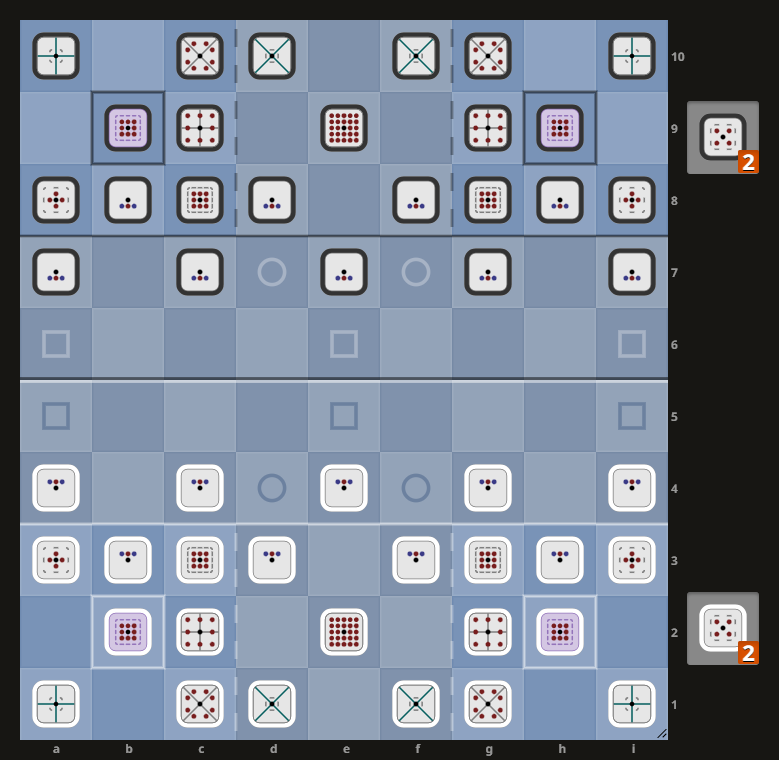
Borderlands is a chess variant created by dpldgr in 2025 for PyChess' Variant Design Contest.
General Rules
- Setup is as per the board above.
- White has the first move.
- Captured pieces are permanently removed from play.
- Chiefs are capturable, therefore checkmate and stalemate don't exist in Borderlands.
- Pieces promote immediately upon reaching the Promotion Zone (Ranks 8-10).
- Warriors on the 3rd rank may make a double step on their first move, and may be captured en passant.
Special Zones, Areas, and Squares
| Zone | Details | Marked With |
|---|---|---|
| White Territory | Ranks 1-5 | |
| White Village Zone | Ranks 1-3 | |
| White Incursion Zone | Ranks 6-7 | |
| White Promotion Zone | Ranks 8-10 | |
| White West Village | a1-3, b1-3, c1-3 | |
| White East Village | d1-3, e1-3, f1-3 | |
| White Village Squares | b2, h2 | |
| White Lion's Yard | d1-3, e1-3, f1-3 | |
| White Lion's Incursion Squares | d7, f7 | ○ |
| White Lion's Promotion Square | e9 | ⊕ |
| White Lion's Den | e2 | ⊕ |
| Black Territory | Ranks 6-10 | |
| Black Village Zone | Ranks 8-10 | |
| Black Incursion Zone | Ranks 4-5 | |
| Black Promotion Zone | Ranks 1-3 | |
| Black West Village | a8-10, b8-10, c8-10 | |
| Black East Village | d8-10, e8-10, f8-10 | |
| Black Village Squares | b9, h9 | |
| Black Lion's Yard | d8-10, e8-10, f8-10 | |
| Black Lion's Incursion Squares | d4, f4 | ○ |
| Black Lion's Promotion Square | e2 | ⊕ |
| Black Lion's Den | e9 | ⊕ |
| Roads | a4-a7, e4-e7, i4-i7. | □ |
Winning Conditions
- Win by Surrender: Capture both enemy Chiefs and the enemy immediately surrenders.
- Win by Conquest: Occupy all four Village Squares for two consecutive moves (one move by each player).
Drawing Conditions
- No Progress: 150 moves (75 by each player) without a capture or promotion.
- Impasse: the game is unable to progress due to neither side having a realistic chance of occupying all four Village Squares or capturing both enemy Chiefs.
Losing Conditions
- No Legal Moves: if a player cannot make a legal move they lose the game.
- Perpetual Check: (TODO: confirm this works for Chiefs).
- Move Repetiion: repeating a position for the 5th time.
Promotion
With the exception of the Chief and Guard (which are non-promoting pieces), pieces mandatorily promote upon reaching the Promotion Zone:
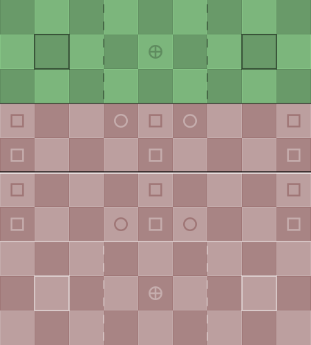
Pieces
Summary
| Name | Notation | Value | Betza |
|---|---|---|---|
| Marauder | M | 0.65 | FmN |
| Falcon | F | 0.90 | WmAmD |
| Warrior | W | 1.00 | fWfceFifmnD |
| Promoted Marauder | +M | 1.51 | KmN |
| Elephant | E | 2.12 | ADmR3 |
| Horse | H | 2.16 | NmB3 |
| Guard | G | 2.17 | KmNmAmD |
| Promoted Falcon | +F | 2.51 | KmAmD |
| Chief | C | 3.11 | KmNmAmD |
| Promoted Elephant | +E | 3.61 | ADmR3WmF |
| Slinger | S | 3.81 | BcpBmW |
| Promoted Horse | +H | 3.94 | NmB3FmW |
| Lion | L | 4.14 | KNAD |
| Promoted Slinger | +S | 4.88 | BcpBW |
| Archer | A | 5.77 | RcpRmF |
| Promoted Warrior | +W | 6.75 | NADmQ3 |
| Promoted Archer | +A | 8.82 | RcpRF |
| Promoted Lion | +L | 9.45 | KNAD |
For the images below, the following convention is used:
- Red Circle = Can make both capturing and non-capturing moves to this square unimpeded.
- Green Circle = Can make a non-capturing move to this square unimpeded.
- Blue Circle = Can make a capturing move to this square unimpeded.
- Green Line = Can make a non-capturing slide up to three squares.
- Teal Line = Can make both a capturing and non-capturing sliding move, or jump a piece and capture in a manner similar to a Cannon.
Chief (C)
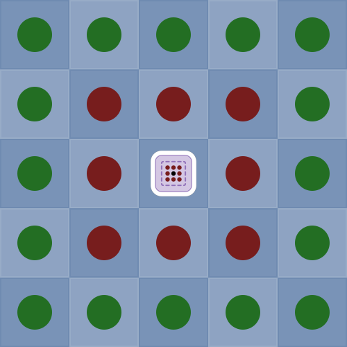
Chiefs can move like a King (K), and also make non-capturing moves like a Knight, Alfil, and Dabbaba (mNmAmD).
Chiefs are the most valuable pieces on the board. Capture both of the enemy Chiefs and your enemy immediately surrenders.
Chiefs are restricted to the Village Zones and the Roads connecting them:
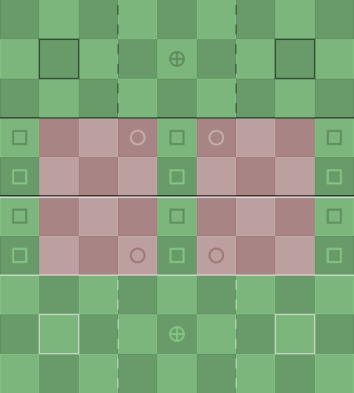
Guard (G)
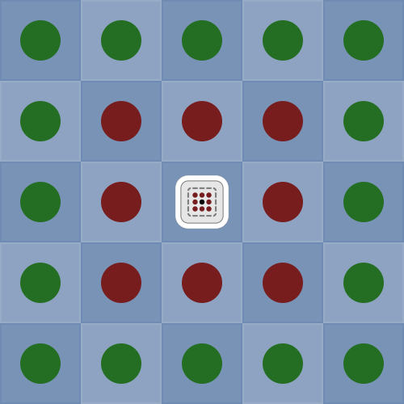
Guards can move like a King (K), and also make non-capturing moves like a Knight, Alfil, and Dabbaba (mNmAmD).
Guards are the only pieces that don't promote and are free to roam the entire board from the start of the game. Their role is to protect the allied Chiefs through any means necessary.
Marauder (M)
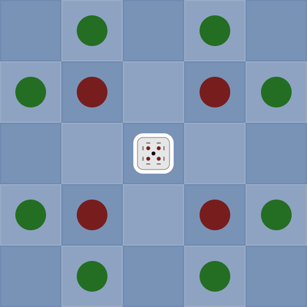
Marauders can move like a Ferz (F), and also make a non-capturing move like a Knight (mN).
Marauders role is to disrupt the enemy through any means necessary. They can very quickly slip behind enemy lines if there are small holes in the enemy's defenses.
Marauders start the game in hand, and must come into play by being dropped into the Incursion Zone, and can often promote on their next move:
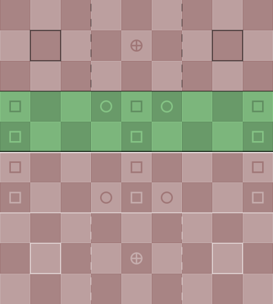
Archer (A)
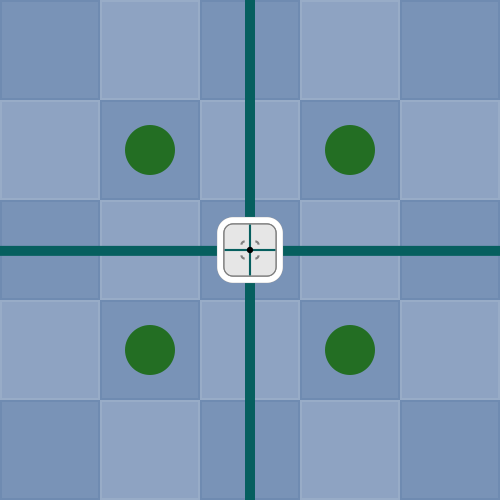
Archers are long range pieces able to attack from afar. They can move like a Rook (R), capture like a Pao (aka Cannon) (cpR), and also make one non-capturing step diagonally (mF).
Promoted Archer (+A)
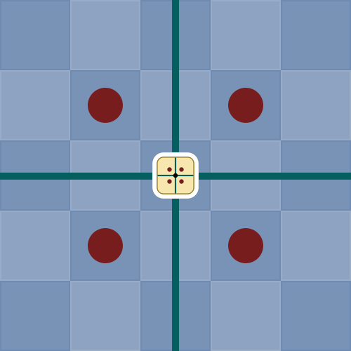
Promoted Archers move the same as Archers, and gain the ability to make one capturing step diagonally (F).
Slinger (S)
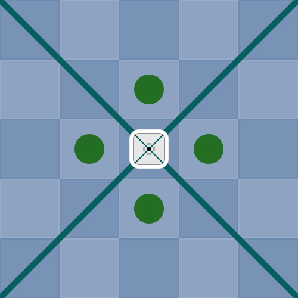
Slingers are long range pieces able to attack from afar. They can move like a Bishop (B), capture like a Vao (diagonal version of the Cannon) (cpB), and also make one non-capturing step orthogonally (mW).
Promoted Slinger (+S)
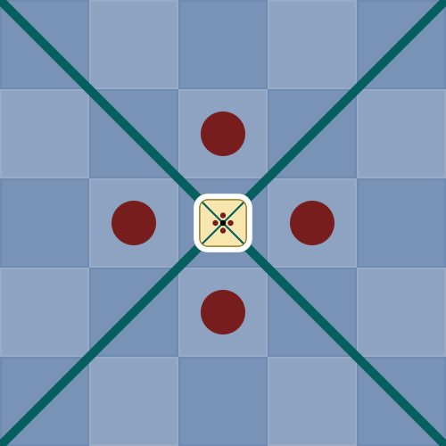
Promoted Slingers move the same as Slingers, and gain the ability to make one capturing step orthogonally (W).
Horse (H)
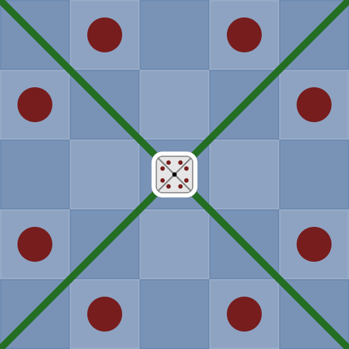
Horses are jumping pieces. They can move like a Knight (N), and also make a non-capturing slide up to three squares like a Bishop (mB3).
Promoted Horse (+H)
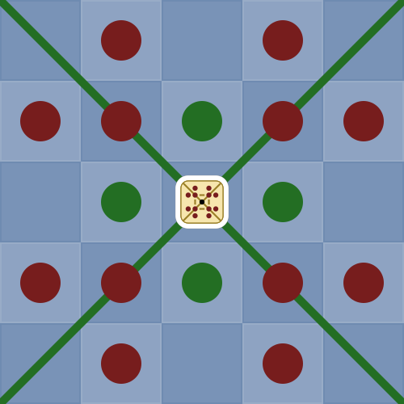
Promoted Horses move the same as Horses, and gain the ability to make one step diagonally (F), and one non-capturing step orthogonally (mW).
Elephant (E)
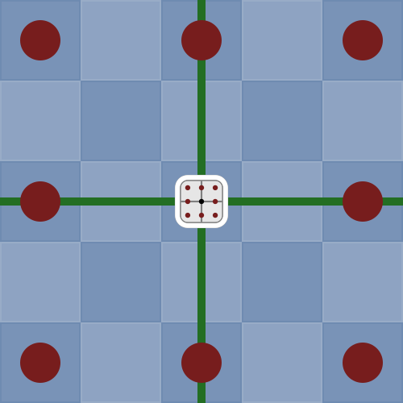
Elephants are jumping pieces. They can move like both an Alfil and Dabbaba (AD), and also make a non-capturing slide up to three squares like a Rook (mR3).
Promoted Elephant (+E)
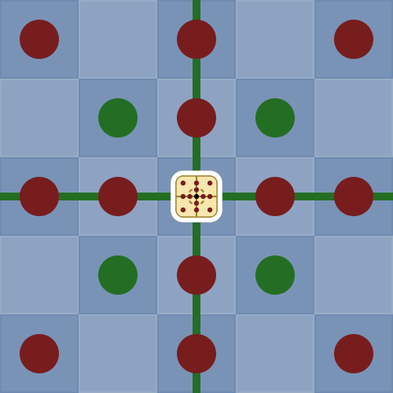
Promoted Elephants move the same as Elephants, and gain the ability to make one step orthogonally (W), and one non-capturing step diagonally (mF).
Falcon (F)
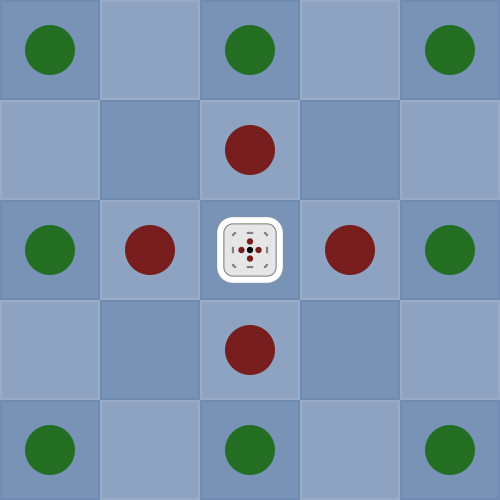
Falcons can move like a Wazir (W), and also make a non-capturing moves like both an Alfil and Dabbaba (mAmD).
Promoted Falcon (+F)
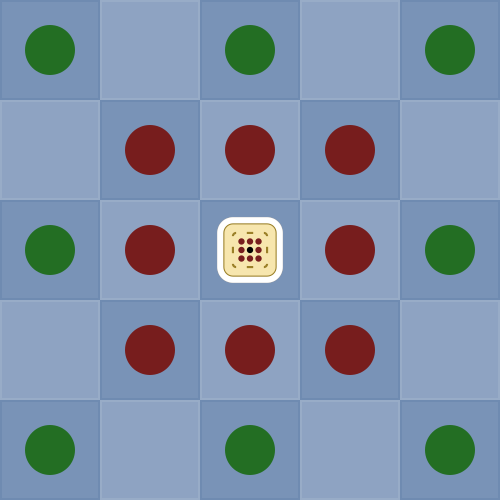
Promoted Falcons move the same as Falcons, and gain the ability to make one step diagonally (F).
Warrior (W)
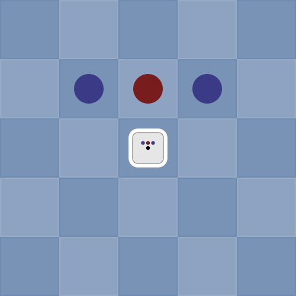
Warriors can move like both a Chess Pawn (fmWfceFifmnD) and Shogi Pawn (fW).
Every square of the enemy's Incursion Zone is initially protected by Warriors.
Promoted Warrior (+W)
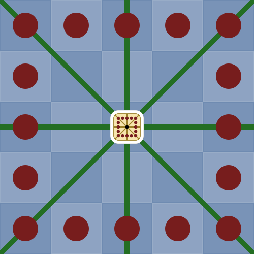
Promoted Warriors can move like a Knight, Alfil, and Dabbaba (NAD), and can also make a non-capturing slide up to three squares like both a Rook and Bishop (mQ3).
Lion (L)
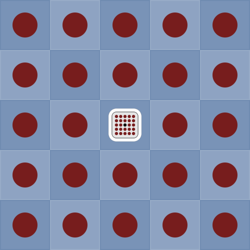
Lions can move like a King, Knight, Alfil, and Dabbaba (KNAD).
Lions start the game as a defensive piece restricted to their side's Territory, and have a very limited path to promotion (via the Lion's Incursion Squares) that is easily defended against. Upon reaching the Lion's Promotion Square, a Lion gains the ability to roam the entire board.
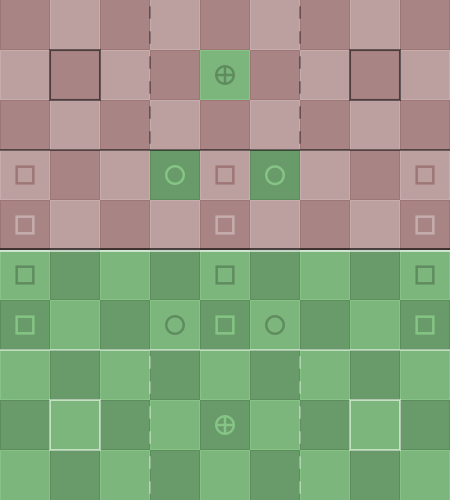
Promoted Lion (+L)
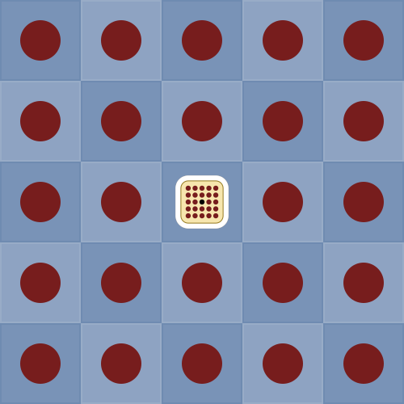
Promoted Lions can move like a King, Knight, Alfil, and Dabbaba (KNAD).
Promoted Lions are the most powerful pieces on the board. They are a force to be reckoned with and can make short work of enemy defenses.
Strategy
TODO.
TODO: make and link to Borderlands video: